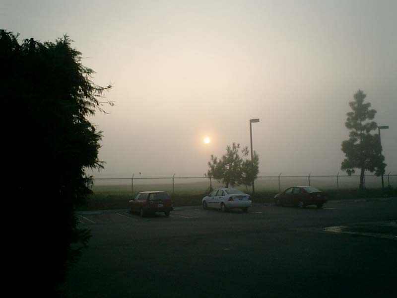
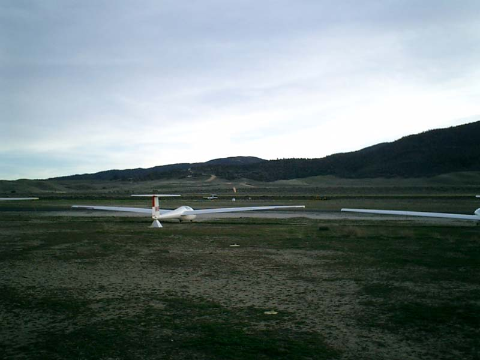

The four seasons
Bakersfield
FOG - early spring -
I placed a picture that
Bakersfield in autumn was enveloped in mist
before.
Although it is the foggy Bakersfield similarly,
this picture has a warmth which waits for spring.

BLUE SKY
The state of Bakersfield changed completely, when the fog had been dispelled.
The spring sunshine was pouring into the city.
SOARER
It is MountainValley of the same day.
The soarer which finished the flight was resting wings slowly.
